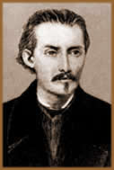

Casimiro
José Marques de Abreu, nasceu na Barra do São João,
Rio de Janeiro; no dia 4 de Janeiro de 1839. Era filho do comerciante
e fazendeiro português, José Joaquim Marques Abreu,
e de Luisa Joaquina das Neves. Porém, o pai não
morava com a mãe, e assim suspeitava-se de uma possível
origem bastarda do poeta. O que seguramente lhe causava muito
transtorno nos contatos sociais.
Recebeu apenas instrução primária
no "Instituto Freeze", e passou praticamente toda a
infância na fazenda do pai, em Correntezas. Em 1852, seguiu
para o Rio de Janeiro e, cedendo as pressões paternas,
iniciou a carreira de comerciante. No ano seguinte foi para Lisboa
e iniciou a carreira literária. Escreveu várias
obras neste período exaltando as belezas da terra natal.
Com inocência e ternura infantil, compôs também
Camões e o Jau, que em 1856 seria representado
em teatro. Aos 17 anos participava ativamente na imprensa portuguesa.
No mesmo ano, o jornal "O Progresso", publicou Carolina,
e na revista "Ilustração Luso-Brasileira"
foram publicados os primeiros capítulos de Camila,
uma recriação de ficção de uma visita
ao Minho, terra de seu pai.
Em 1857, voltou para o Rio de Janeiro. Freqüentava
bailes carnavalescos e rodas literárias. Colaborou em A
Marmota, O Espelho e outras publicações.
Trabalhou também no "Correio Mercantil", ao lado
de Machado de Assis e Manuel Antônio de Almeida. A Primavera
foi publicada em 1859, e no ano seguinte, lamentou o falecimento
de seu pai.
Casimiro de Abreu, tuberculoso aos 21 anos, recolhe-se
em Nova Friburgo. Sem obter melhora, segue para a fazenda de Indaiaçu;
onde faleceu em 18 de Outubro de 1860, seis meses depois de seu
pai e três meses antes de completar vinte e dois anos.
Casimiro, colocado entre os poetas da segunda geração
romântica, expressa, através de um estilo espontâneo,
emoções simples e ingênuas; não se
encontra em suas obras a paixão surda e carnal de Junqueira
Freire; ou os desejos macerados de Álvares
de Azevedo. É o patrono da Cadeira nº 6 da "Academia
Brasileira de Letras", por escolha do fundador Teixeira de
Melo.
Em As Primaveras, o poeta se envolve nos
elementos preferidos de suas obras: a nostalgia da infância,
o gosto da natureza, a religiosidade ingênua, o pressentimento
da morte, a exaltação da juventude, a devoção
pela pátria e a idealização da mulher amada.
Assim, Casimiro de Abreu foi incluído como lírico-romântico.
No poema Violeta, encontra-se o amor romântico
segundo o qual devem ficar subentendidos os aspectos sensuais
mais diretos. O meu livro negro, em toda a sua obra,
é o único momento de amargura violenta e rebeldia
mais acentuada; noutros, o drama surge menos compacto. O exagero
no sentimentalismo e amor pela natureza, pela mãe e pela
irmã, são encontrados nas obras deste poeta. As
emoções se sucedem sem violência, envolvidas
num misto de saudade e tristeza.
Suas obras foram Camões
e o Jau, teatro (1856); Carolina, romance (1856);
Camila, romance inacabado (1856); A virgem loura,
Páginas do coração, prosa poética
(1857); As primaveras (1859), foram reunidas na Obras
de Casimiro de Abreu, edição comemorativa do
centenário do poeta.
Por
Spectrum
Obra
Disponível: